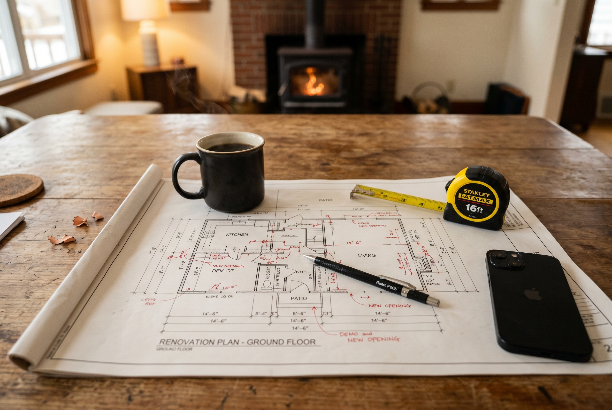
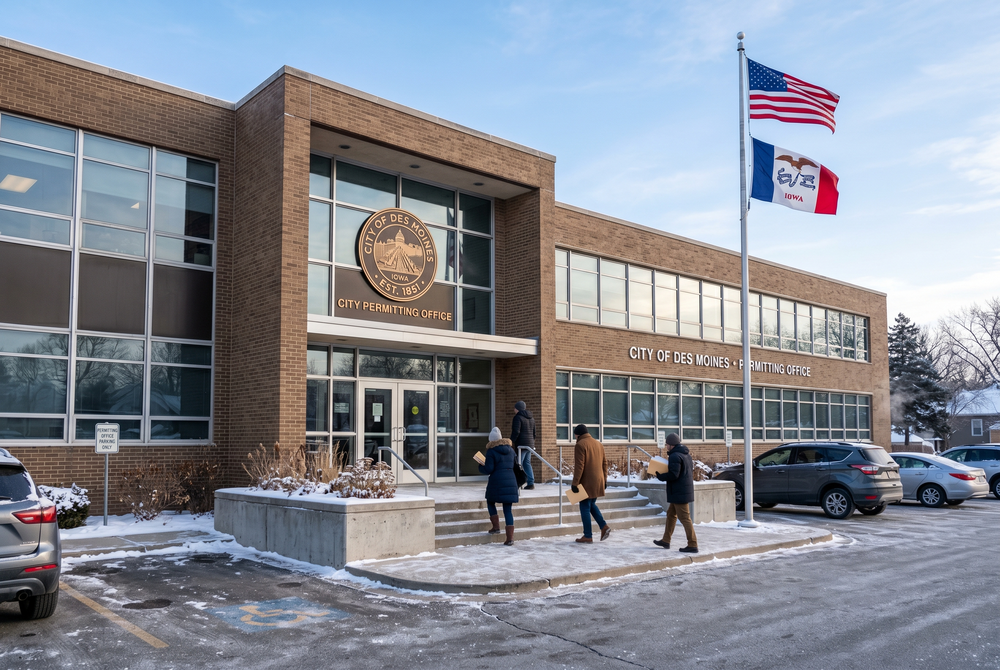

Published December 14, 2026 • By Black Ridge Contracting
If you're sitting around at year end thinking about a 2027 renovation, you're already ahead of most people. The homeowners who get the best contractor schedules, the most predictable budgets, and the lowest stress remodels are the ones who started planning in December rather than calling a contractor in May. Here's the full framework we run our customers through.
Step 1: Define the Project, Not the Solution
The first mistake most homeowners make is locking in on a specific solution before understanding the problem. "I need new cabinets" might be true, or it might be that you need better lighting, more counter space, and a fresh coat of paint. The right contractor walkthrough starts with what bothers you about the current space, not what you want installed.
Write down what's not working before you talk to anyone. Examples that work better than solutions:
- "The kitchen is dark and feels small even though it's actually big."
- "Our family doesn't fit in the basement anymore."
- "The roof leaks at the chimney every storm and the ceiling shows it."
- "We want to age in place and the master bath has a step over tub we can't use anymore."
Problem statements lead to better solutions than solution statements.
Step 2: Real Budget Ranges for 2027 Iowa Pricing
Here are realistic 2027 Iowa contractor pricing ranges by project type. These are all in scope ranges, exclusive of major unknowns like foundation work uncovered mid project.
- Roof replacement, typical home: $10,000 to $18,000
- Siding replacement, fiber cement: $18,000 to $35,000
- Gutter replacement with guards: $2,500 to $5,500
- Concrete driveway replacement: $5,000 to $10,000
- Minor kitchen refresh: $15,000 to $25,000
- Full kitchen remodel: $50,000 to $120,000
- Bathroom remodel: $20,000 to $45,000
- Basement finishing with bathroom: $50,000 to $90,000
- Room addition: $150,000 to $300,000
- Whole home renovation: $150,000 to $500,000 depending on scope
Add a 15 to 25 percent contingency for unknowns. Older homes need the higher end of that range. Newer homes usually come in closer to 15.

Step 3: Get the Right Contractors in the Door
The single most important step is picking the right contractor. The right contractor changes the outcome more than the budget does. Get walkthroughs from 2 to 3 contractors, all of whom have done work similar to yours in your specific neighborhood. Verify licensing and insurance. Read recent Google reviews. Ask for 2 references from projects completed in the last 12 months.
What to evaluate at the walkthrough:
- Communication style. Do they answer your questions directly or dance around them?
- Honesty about scope. Do they tell you what won't work as well as what will?
- Written estimate detail. Vague estimates lead to vague projects. Detailed written scope leads to predictable outcomes.
- Timeline realism. A contractor promising 4 weeks for a 10 week project is either inexperienced or being dishonest.
- How they handle questions about previous projects gone wrong. Every contractor has had hard projects. The honest ones will talk about what they learned. The dishonest ones claim everything always goes perfectly.
Step 4: Permits
Most structural work, electrical changes, plumbing changes, and additions require permits in Iowa. The specific thresholds vary by municipality.
What typically needs a permit in Central Iowa:
- Room additions and conversions
- Structural changes including load bearing wall removal
- Electrical panel upgrades and most new circuits
- New plumbing fixtures or moved plumbing
- Roof replacement (most municipalities)
- Window replacements (some municipalities)
- Decks above a certain height
Your contractor handles most permit applications, but verify on the written contract that permits are included and that your contractor is pulling them in their name. Working without required permits creates problems at sale time and can void homeowner insurance claims if something goes wrong.

Step 5: Realistic Timeline
Plan the timeline backward from your desired start date.
| Step | Time |
| Project definition and budget | 1 to 2 weeks |
| Contractor walkthroughs and estimates | 2 to 4 weeks |
| Contractor selection and contract signing | 1 to 2 weeks |
| Finish selection and material orders | 4 to 8 weeks |
| Permit application and approval | 2 to 6 weeks |
| Construction | 3 to 16 weeks depending on scope |
| Total from "I want a remodel" to done | 4 to 9 months |
For a 2027 spring start, the planning starts now in December.
The Hardest Part Is Starting
Most renovations sit in the "we should do that" phase for years. The homeowners who actually get the projects done are the ones who book the first walkthrough. Get someone in the door, get a written estimate, and decide from there.
At Black Ridge Contracting we do free walkthroughs across Central Iowa. We'll give you a written scope, written estimate, and a clear answer on when we can fit you in. See our services or call (515) 219-4654.
If you decide the renovation math doesn't work and you'd rather just sell, our wholesaling team at Heberer Homes handles Central Iowa sellers directly. Cash offer in 24 hours, close in two weeks.
Frequently Asked Questions
Kitchen $15K to $120K, bathroom $20K to $45K, basement $40K to $90K, whole home $150K to $500K. Add 15 to 25 percent contingency.
Most structural, electrical, plumbing, and addition work requires permits. Cosmetic work usually does not. Verify with your municipality and your contractor.
Kitchen 3 to 12 weeks, bathroom 4 to 8 weeks, basement 6 to 10 weeks, roof 3 to 7 days. Add buffer for material delays.
Get 2 to 3 walkthroughs, verify licensing and insurance, read recent reviews, check references, evaluate communication style.